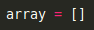
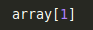
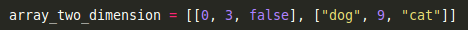
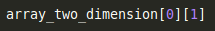
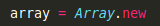
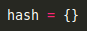
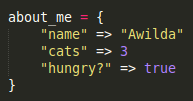
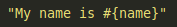

Arrays are used when you want to add many different elements in one variable. Arrays look like this:
Within the brackets we can store the following:
1. numbersEach element in an array has an index starting at 0. If we want the second element of an array, we would call it like this:
Arrays can have a mix of numbers, strings and booleans. We can also store arrays within arrays. These arrays are "Two-Dimensional."
If we wanted to call the second element from the first set of array, it would look like this:
Finally, if we wanted to create a new array we can do:
or use an empty bracket (as seen in the first snapshot). Not too bad, huh?
So, now let's check out hashes. We saw how to create a new array and fortunately, hashes aren't so different. Instead of brackets, we use braces.

We can also store information in hashes. We do this in 'key-value' pairs. Like arrays we can store:
1. numbersWe can now put that all together and see this:
If we want to print a hash inside a string, we can do:
Now, why do we use arrays and hashes? To store data that we can call when building beautiful sites using Ruby!
Thinking Style - August 16, 2015
Arrays & Hashes - August 16, 2015
Version Control - July 31, 2015
'class' vs 'id' - August 10, 2015